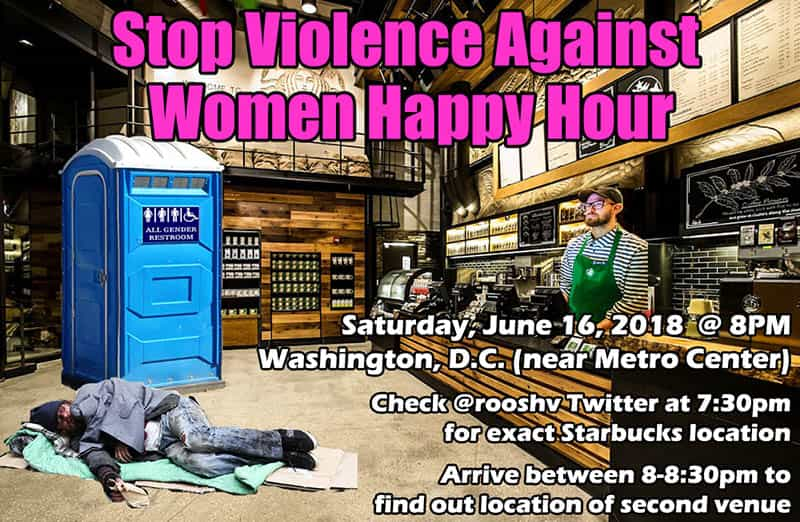

Daryush "Roosh" Valizadeh created ROK in October 2012. You can visit his blog at RooshV.com or follow him on Twitter and Facebook.


I’m throwing a happy hour on Saturday, June 16, 2018 for human beings of all gender identities to discuss ways that the patriarchy is hurting women. All attendees are expected to grovel before any random woman in the vicinity, no matter what her size or appearance, and satisfy her in any way she demands. During the event, I encourage you to bring women to my presence so that I can apologize to them on the behalf of you and all other men. We will also teach each other not to rape and how to stop making women feel uncomfortable in the presence of our toxic masculinities.

The meetup begins at 8pm at a Starbucks location that will be shared on my Twitter at 7:30pm on the day of the event. You do not have to buy anything thanks to the company’s progressive policies for persons of color, which includes myself. Feel free to also use their restroom as if it were any public toilet.
Between 8-8:30, I will personally tell you the location of a bar that we will move to after 8:30. You must arrive to the Starbucks by 8:30 to receive details of the bar venue since it will not be shared online. If you arrive to the Starbucks at 8:31, and don’t see me, you will miss the rest of the happy hour.
Both the Starbucks location and bar will be within walking distance of the Metro Center subway station. If there are unexpected happenings, I will share it on Twitter. If my Twitter is banned, check my Gab. I do not expect any protesters since I’m now “old news,” but that may change if the event is publicized in the media or heavily discussed on Reddit and Twitter.
By attending the happy hour, you agree to the following code of conduct…
1. You attend this happy hour at your own risk. There is a chance that you may be doxed, physically assaulted, maimed, or arrested. I will do everything in my power to act as a shield between you and potential leftist criminality, but I cannot personally guarantee your safety. Be aware of your surroundings at all times and only take risks you’re comfortable with.
2. Do not bring any legal or illegal weapons, items that could be used as a weapon, or riot gear. This includes (but is not limited to) guns, knives, brass knuckles, shields, helmets, pepper sprays, batons, sharp pens, flashlights, and grenades. If you are assaulted by a protester, immediately withdraw to safety and contact the police. If you bring a weapon or use physical violence, you will be asked to leave. Your only “weapon” should be the camera on your phone.
3. This is not a “white nationalist” or “alt right” gathering. Those of all races and ethnic backgrounds are encouraged to attend. You will be asked to leave if you bring Nazi paraphernalia, perform Nazi salutes, or engage in any other “false flag” behavior that is meant to make the group look bad.
4. To identify another attendee, use the code phrase: “Do you know where I can find a pet shop?” If you are asked this question, answer exuberantly in the affirmative.
5. Do not take pictures or video of any other attendee without their consent.
6. If you are anxious about getting doxed, wear sunglasses and/or a hat. The more media coverage this happy hour receives, the more likely there will be doxing attempts.
7. Do not discuss illegal activities or other criminal acts as if you were a FBI informant. Illegality of any sort will not be tolerated. All attendees must comply with D.C. and Federal laws.
8. Take extra precautions when leaving any venue. If you encounter a violent mob of leftists, return back to the venue and ask for help.
9. Journalists are not allowed to attend, and will be asked to leave if identified.
If you cannot follow the above code of conduct, you are not allowed to attend the happy hour. This event is meant to be a peaceful affair for those who follow me and want to have a friendly conversation about my work or the state of the world. I look forward to seeing you on June 16.
Read Next: How The FBI Infiltrates Movements